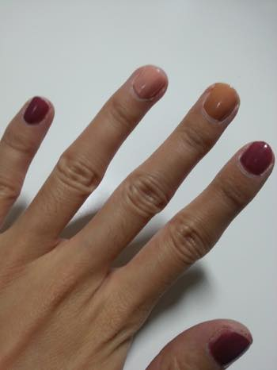
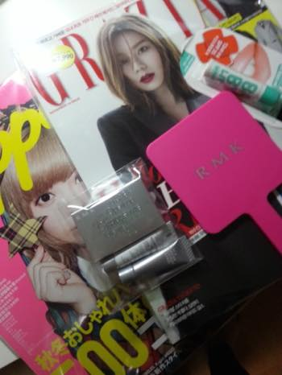
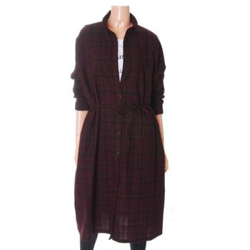
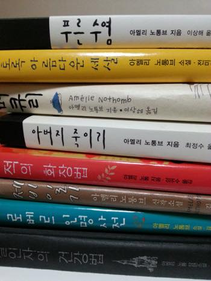

생필품도 꼭 한번에 와장창 다 떨어지듯
일거리도 항상 한번에 옵니다 ;ㅂ;
10월달은 그야말로 사망
영혼을 팔아 돈을 벌고있어요 ㅡㅡ;;;
그렇다고 이게 엄청 보람차느냐;; 그것도 아닌거 같다능 ㅜㅜ 흑흑흑
그리고 확실히 사람이 일이 많아지면
스트레스가 올라가서인지 필요도없는 뭔가를 자꾸 지르고 싶어지나봅니다;;
또다시 마구 이것저것 기웃거리고있어요 ^^;;

스킨푸드 네일 좋아합니다//ㅂ//
평소 잘 안하는 색조합인데 맘에들어서 사진찍어놨어요 :)

정말 뜬금없이 RMK 저 삥크거울이 갖고싶어서
블러셔를 샀습니다 (←응?)
색상은 01번
교보갔다가 집어온 지퍼 / 그라치아
그라치아 잡지 가격도 저렴한데 부록 훈늉하네요
메이블린 립밤 꾸준히 재구매해서 썼는데
이번에 부록으로 있길래 잡지를 샀습니다 ^^;;;

톰보이
체크 셔츠 원피스
결국 질렀습니다 ㅋㅋㅋㅋㅋ
시즌종료라 매장에 물건이 빠진 바로 그 다음날 방문하는 타이밍
구매가능하다고 해서 주문해서 받아왔어요 홍홍
이런 스타일을 워낙 많이 입기도 했고
체크무늬가 잘못입으면 정말 가난해보이는 지라;; 고민했었는데
맘에들면 질러야 하는겁니다 ^^;;;;

지하철 40분 이상 이동할 일이 생길때
근처 알라딘 매장에서 아멜리노통브 책을 하나둘씩 야곰야곰 사고있습니다
으흐흐 이분 소설 넘 좋아용// 잼써//
로동하기 싫어
현실도피성으로 쓰는 잡담 끗!